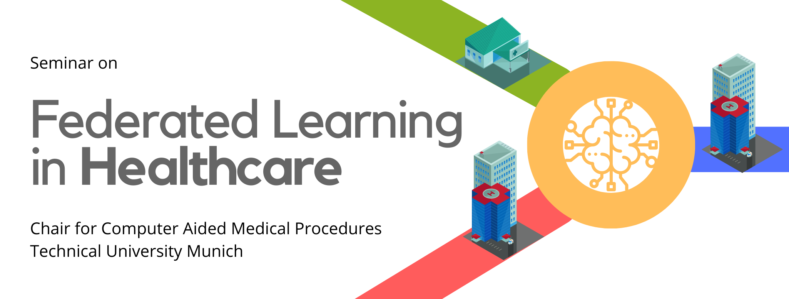

Master Seminar (2 SWS, 5 ECTS) offered for BioMedical Computing (BMC) program at the Chair for Computer Aided Medical Procedures and Augmented Reality, TU Munich
Organizers: Dr. Shadi Albarqouni, Helmholtz AI and TU Munich, and Prof. Nassir Navab, TU Munich.

Following the great success of our on-going seminar on Deep Learning for Medical Applications, we would like to discuss advanced topics that are quite relevant to Federated Learning which becomes an interesting and hot research direction in the community. In simple words, Federated Learning enables training models at the client-side while preserving their privacy, and aggregates the knowledge from the nodes to learn a global model. The interesting part here that the data are kept private and not transmitted to any other nodes. Instead, the characteristics (e.g. parameters) of the global model are shared with the clients, and once the training is done locally, the characteristics are sent back to the global one for aggregation. This learning paradigm has been received quite nicely in the community, in particular, for sensitive domains, e.g. Healthcare. To push this momentum, we proposed, together with our academia and industry partners, a workshop on Federated, Collaborative, and Distributed Learning in the International Conference on Medical Image Computing and Computer-Aided Intervention (MICCAI) to attract significant contributions attacking the challenges in Medical Imaging and Healthcare. In this seminar, we will be discussing the relevant papers on Federated Learning with an emphasis on the papers tackling the common challenges in Medical Imaging, e.g. data heterogeneity, domain shift, and non-iid distributed data.
In this Master Seminar, each student is asked to send three preferences from the list, then he will be assigned one paper. In order to successfully complete the seminar, participants have to fulfill these requirements:
The students are required to attend each seminar presentation which will be held during this course. Each presentation is followed by a discussion and everyone is encouraged to actively participate. The blog post must include all references used and must be written completely in your own words. Copy and paste will not be tolerated. Both the blog post and presentation have to be written in English.
Submission Deadline: You have to submit both the presentation two weeks right after your presentation session. The deadline of the blog post is moved to 1st Feb. 2021.
Guidelines: I could not find better than this guidelines to prepare for your presentation. The only difference is that you need to plan for 30 minutes for 1-4, and 10 minutes for 5). Nevertheless, I have prepared a few slides acting as a guidelines for your presentation and blog posts.
| Date | Session: Topic | Speakers / Presenters | Slides |
|---|---|---|---|
| 17.07.2020 (11:00 AM) | Preliminary Meeting | Slides | |
| Online | Paper Assignment | Guidelines | |
| 09.11.2020 @ 11:00 AM | Federated Learning; Challenges, Methods, and Future I | Invited Talk: Federated Learning: Collaborative AI without Exposing Patient Data – Nicola Rieke from NVIDIA | |
| 16.11.2020 | Federated Learning; Challenges, Methods, and Future II | Ünay, Sánchez Clemente | |
| 23.11.2020 | Data Heterogeneity I | Lin, Raether | |
| 30.11.2020 | Data Heterogeneity II | Stoican, Schwarz | |
| 07.12.2020 | System Heterogeneity and Privacy Issues I | Invited Talk: Secure, privacy-preserving and federated machine learning in medical imaging – George Kaissis from Klinikum rechts der Isar | |
| 14.12.2020 | System Heterogeneity and Privacy Issues II | Qian, Heidmann | |
| 21.12.2020 | Data Heterogeneity III | Spannagl, Arfaoui | |
| 11.01.2021 | Federated Learning with Medical Imaging I | Hofmann | |
| 18.01.2021 | Federated Learning with Medical Imaging II | Boysen | |
| 25.01.2021 | Federated Learning with Medical Imaging III | Invited Talk: TBD – Eric W. Tramel from Owkin |
| Topic | No | Title | Conference/Journal | Tutor | Student (Last name) | Link |
|---|---|---|---|---|---|---|
| Intro. to FL | 1 | FedAvg: Communication-Efficient Learning of Deep Networks from Decentralized Data | AISTATS, 2016 | Ünay | arXiv | |
| 2 | The Future of Digital Health with Federated Learning | arXiv, 2020 | Invited Speaker | arXiv | ||
| Challenges | 3 | Federated Learning: Challenges, Methods, and Future Directions | IEEE Signal Processing Magazine, 2020 | Sánchez Clemente | arXiv | |
| 4 | On the Convergence of FedAvg on Non-IID Data | ICLR 2020 | ||||
| Data Heterogeneity | 5 | FedMA: Federated Learning with Matched Averaging | ICLR 2020 | Lin | ||
| 6 | Federated Adversarial Domain Adaptation | ICLR 2020 | Spannagl | |||
| 7 | Federated optimization in heterogeneous networks | MLSys 2020 | Raether | |||
| 8 | FedAwS: Federated Learning with Only Positive Labels | ICML 2020 | ||||
| 9 | SCAFFOLD: Stochastic Controlled Averaging for Federated Learning | ICML 2020 | Stoican | |||
| 10 | Federated Visual Classification with Real-World Data Distribution | CVPR 2020 | Schwarz | |||
| System Heterogeneity | 11 | Federated Multi-Task Learning | NeurIPS 2017 | Qian | ||
| 12 | Variational Federated Multi-Task Learning | arXiv 2019 | Heidmann | arXiv | ||
| Privacy-Issues | 13 | Secure, privacy-preserving and federated machine learning in medical imaging | Nature MI | Invited Speaker | HTML | |
| 14 | Differentially Private Meta-Learning | ICLR 2020 | ||||
| Explainability and Robustness | 15 | The Non-IID Data Quagmire of Decentralized Machine Learning | ICML 2020 | Arfaoui | ||
| 16 | DBA: Distributed Backdoor Attacks against Federated Learning | ICLR 2020 | ||||
| Open Problems in FL | – | Advances and Open Problems in Federated Learning | arXiv | – | – | |
| Federated Learning with Medical Imaging | 17 | Privacy-preserving Federated Brain Tumour Segmentation | MICCAIW 2019 | Boysen | HTML | |
| Multi-institutional Deep Learning Modeling Without Sharing Patient Data: A Feasibility Study on Brain Tumor Segmentation | MICCAIW 2019 | Boysen | HTML | |||
| 18 | Federated Learning in Distributed Medical Databases: Meta-Analysis of Large-Scale Subcortical Brain Data | ISBI 2019 | Hofmann | HTML | ||
| Inverse Distance Aggregation for Federated Learning with Non-IID Data | MICCAIW 2020 | Hofmann |
If you have any questions regarding the course, please do not hesitate to contact us at shadi.albarqouni@tum.de